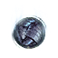

С'лен
Предметы / Универсальные орбы
Открыть в интерактивной вики →
| Эффект | Больший переносимый вес |
|---|---|
| Суб-орб | 50 |
| Би-орб | 65 / 68 / 72 |
| Магни-орб | 85 / 92 / 102 |
| Архи-орб | 125 / 140 / 162 |

Открыть в интерактивной вики →
| Эффект | Больший переносимый вес |
|---|---|
| Суб-орб | 50 |
| Би-орб | 65 / 68 / 72 |
| Магни-орб | 85 / 92 / 102 |
| Архи-орб | 125 / 140 / 162 |